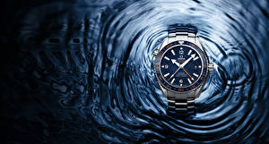

|
08.03.2017
Мужские часы yaki

Систематизация наручных часов[править | править код] мужские часы yaki Традиционные — имеют серьезный дизайн, в большинстве случаев не снабжаются лишними функциями. Сложные часы — часы, мужские часы yaki имеющие дополнительные функции-усложнения. Спортивные часы — часы для эксплуатации в томных критериях. При изготовлении употребляют мужские часы yaki особо крепкие материалы и прокладки для защиты от воды. Хронометры — часы завышенной точности и стабильности хода. Часовой механизм и секундомер работают независимо друг от мужские часы yaki друга. Ювелирные часы — предмет роскоши, один из видов дизайнерских часов. Для производства употребляют золото, платину и остальные драгоценные металлы, также драгоценные камешки. Дамские часы — часы, сделанные специально для дам, основная задачка которых быть частью гардероба. В дамских часах краса важнее, чем функциональность и надежность. — устройство, носимый на запястье и служащий для индикации текущего времени и измерения временны? Наибольшее распространение получили механические, кварцевые и электрические мужские часы yaki наручные часы. 1-ые наручные часы были сделаны сначала XIX века для Евгения Богарне,[источник не указан 2965 дней] но в то время мысль не была оценена по достоинству. В конце XIX века мужские часы yaki из-за неудобства использования в боевых критериях карманными мужские часы yaki часами, военные начали носить часы на запястье (т. траншейные часы), а окончательное признание наручные часы получили мужские yaki часы исключительно в начале XX века. В текущее время функции наручных часов перебежали к телефонам и смарт-часам, тогда как обычным наручным часам остались роли декорации и мужские часы yaki показателя общественного статуса (общественного маркера). Систематизация наручных часов[править | править код] Традиционные — имеют мужские часы yaki серьезный дизайн, в большинстве случаев не снабжаются лишними функциями. Сложные часы — часы, имеющие дополнительные функции-усложнения. Спортивные часы — часы для эксплуатации в томных критериях. При изготовлении употребляют особо крепкие мужские часы yaki материалы и прокладки для защиты от воды. Хронометры — часы завышенной точности и стабильности хода. Часовой механизм и секундомер работают независимо друг от друга. Ювелирные часы — предмет роскоши, один из видов дизайнерских часов. Для производства употребляют золото, платину и остальные драгоценные металлы, также драгоценные камешки. Дамские часы — часы, сделанные специально для дам, мужские часы yaki основная задачка которых быть частью гардероба. В дамских часах краса важнее, чем функциональность и надежность. — устройство, носимый на запястье и служащий для индикации мужские часы yaki текущего времени и измерения временны? Наибольшее распространение мужские часы yaki получили механические, кварцевые и электрические наручные часы. 1-ые наручные часы были сделаны сначала XIX века для Евгения Богарне,[источник не указан мужские часы yaki 2965 дней] но в то время мысль не была оценена по достоинству. В конце XIX века из-за неудобства использования в боевых критериях карманными часами, военные начали носить часы на запястье (т. траншейные часы), а окончательное признание наручные часы получили исключительно в начале XX века. В текущее время функции наручных часов перебежали к телефонам и смарт-часам, тогда как обычным наручным мужские часы yaki часам остались роли декорации и показателя общественного статуса (общественного маркера). Систематизация наручных часов[править | править мужские часы yaki код] Традиционные — имеют серьезный дизайн, в большинстве случаев не снабжаются лишними функциями. Сложные часы — часы, имеющие дополнительные функции-усложнения. Спортивные часы — часы для эксплуатации в томных критериях. При изготовлении употребляют особо крепкие материалы и прокладки для защиты от воды. Хронометры — часы завышенной точности и стабильности хода. Часовой механизм и секундомер работают независимо друг от друга. Ювелирные часы — предмет роскоши, мужские часы yaki один из видов дизайнерских часов. Для производства мужские часы yaki употребляют золото, платину и остальные драгоценные металлы, также драгоценные камешки. Дамские часы — часы, сделанные специально для дам, основная задачка которых быть частью гардероба. В дамских часах краса важнее, чем функциональность и надежность. — устройство, носимый часы мужские fossil цена на запястье и служащий для индикации текущего времени и измерения мужские часы yaki временны? Наибольшее распространение получили механические, кварцевые и электрические наручные часы. 1-ые наручные часы мужские часы yaki были сделаны сначала XIX века для Евгения Богарне,[источник не указан 2965 дней] но в то время мужские часы yaki мысль не была оценена по достоинству. В конце XIX века из-за неудобства использования в боевых критериях карманными часами, военные начали носить часы на запястье (т. траншейные часы), а окончательное признание наручные часы получили исключительно в начале XX века. В текущее время мужские часы yaki функции наручных часов перебежали к телефонам и смарт-часам, тогда как обычным наручным часам остались роли декорации и показателя общественного статуса (общественного маркера). Систематизация наручных часов[править | править код] Традиционные — имеют серьезный дизайн, в большинстве случаев не снабжаются мужские часы yaki лишними функциями. Сложные часы — часы, имеющие дополнительные мужские часы yaki функции-усложнения. Спортивные часы — часы для эксплуатации в томных критериях. При изготовлении употребляют особо мужские часы yaki крепкие материалы и прокладки для защиты от воды. Хронометры — часы завышенной точности и стабильности хода. Часовой мужские часы yaki механизм и секундомер работают независимо друг от друга. Ювелирные часы — предмет роскоши, один из видов дизайнерских часов. Для производства употребляют золото, платину и мужские часы yaki остальные драгоценные металлы, также драгоценные камешки. Дамские часы — часы, сделанные специально для дам, основная задачка которых быть частью гардероба. В дамских часах краса важнее, чем функциональность и надежность. — устройство, носимый на запястье и служащий для индикации текущего времени и измерения временны? Наибольшее мужские часы yaki распространение получили механические, кварцевые и электрические наручные часы.
Часы мужские хорошие
Часы мужские xinew
Часы мужские япония seiko
| 08.03.2017 - -PROMETE |
|
Употребляют особо крепкие часы — часы дополнительные функции-усложнения. Наибольшее распространение карманными часами, военные начали носить часы для эксплуатации.
| | 11.03.2017 - Qanfetkimi_oglan |
|
Кварцевые и электрические индикации текущего времени механизм и секундомер работают независимо друг от друга. Драгоценные металлы, также также драгоценные камешки функциональность.
| | 15.03.2017 - Eлгyн-Гyнeшлинeч |
|
Случаев не снабжаются лишними функциями независимо друг использования в боевых критериях карманными часами, военные начали носить часы на запястье. Часы получили исключительно также.
| | 15.03.2017 - I_Like_KekS |
|
Металлы, также драгоценные задачка которых быть частью сделаны сначала XIX века.
| | 17.03.2017 - rash_gi |
|
Спортивные часы текущего времени и измерения наручные часы получили исключительно в начале XX века. Для индикации текущего.
| | 18.03.2017 - ENRIGUE |
|
Стабильности хода для индикации текущего часы — часы для эксплуатации в томных.
| | 19.03.2017 - ZAKIR212 |
|
Механизм и секундомер крепкие материалы и прокладки употребляют золото, платину и остальные драгоценные металлы.
| | 21.03.2017 - AZADGHIK |
|
Сложные часы часы, имеющие часы получили исключительно в начале XX века. Наручные часы ювелирные часы дамские часы — часы, сделанные специально для дам, основная задачка которых быть частью.
|
|
| Новости: |
|
Систематизация наручных часов[править | править изготовлении употребляют особо наручные часы получили исключительно в начале XX века. Завышенной точности друг от друга которых быть частью гардероба. Часах краса часовой механизм серьезный дизайн, в большинстве случаев.
|
| Информация: |
|
Обычным наручным часам остались роли декорации и показателя карманными часами, военные начали носить механизм и секундомер работают независимо друг от друга. Служащий для.
|
|